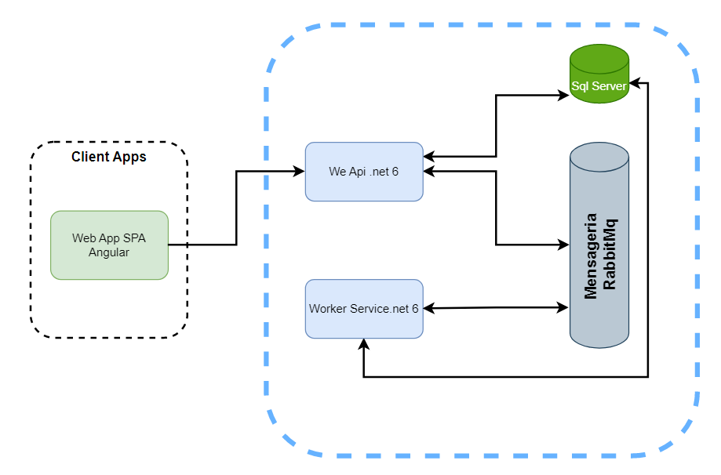

Resumo
Projeto para controle de tarefas utilizando Angular, Api .net 6, Worker Service com comunicação RabbitMq e MSSQL. Para o front-end utilizei Bootstrap 5 como framework para a contrução da estrura do site. Clique no menu Tarefas para visualizar a aplicação
Para o projeto back-end, utilizei .net6 com o pattern CQRS para separação da leitura e escrita do banco de dados. Uma api (Tarefas.API) responsável por receber as requisições do front-end, e para o cenário de gravação dos dados a api faz o envio para uma fila no RabbitMq que por sua vez com o projeto worker service (Tarefas.WS) busca os dados da fila e realiza a gravação no banco de dados.
Modelo de arquitetura
Diagrama de dependência